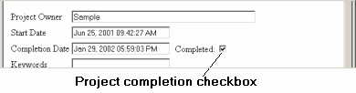

Data Freezing Data Freezing
Data Freezing Data FreezingBy default, the dashboard will "freeze" appropriate pieces of data when the corresponding project phase is marked as completed. The two points where this happens are at the end of the Planning phase and at the end of the project.
In PSP process levels 0.1 and above, when you are planning your project the dashboard will use your historical data to help you create an estimate of how your total time will be distributed across the process phases. Once you click the completion checkbox to complete the planning phase, all your Planned data will be baselined. The estimates you entered for size and time, along with all the calculated computed data elements for estimated data, will be frozen so that your planned data will always stay constant.
Similarly, when you mark the project complete, the To Date numbers will be brought up to date and frozen. This will enable you to view this report again in the future without having the To Date numbers changing in the report.
One side effect of the freezing of data is that if you want to change your time or size estimate, you will have to navigate back to the Planning phase and mark it as incomplete by clicking the completion checkbox again. Once it has been marked as incomplete the dashboard will allow you to enter a different estimate.
The same is true of the To Date items on the report. If you navigate back to an old project and start logging time to it, the Actual columns will update as required, but the To Date columns will not. You will need to mark the project as incomplete so that the To Date items will thaw out and recalculate.
The Project Completion checkbox is located on the Project Plan Summary form.
